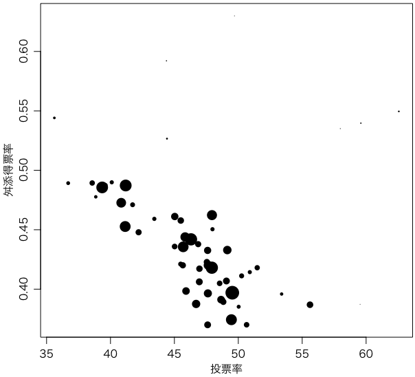
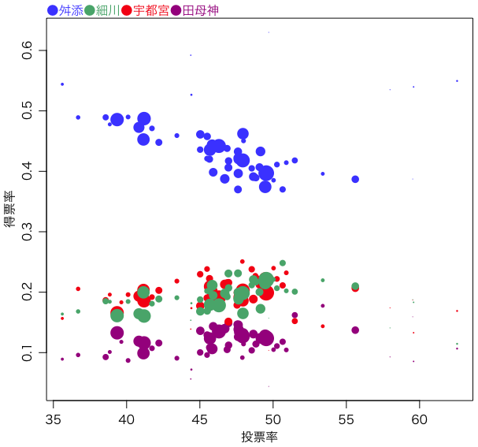

とりあえず東京都-H26東京都知事選挙投開票速報のデータをCSVにした：tochiji2014.csv。
x = fread("http://okumuralab.org/~okumura/stat/data/tochiji2014.csv")
par(mgp=c(2,0.8,0)) # 好み
plot(x$投票率_平均, x$ますぞえ/x$投票者数_計, pch=16,
cex=sqrt(x$選挙当日有権者数_計)/300,
xlab="投票率", ylab="舛添得票率")
円の面積が有権者数に比例するように描いた。
ついでにほかの候補も。
ほかに参考になりそうなサイト：
Last modified: